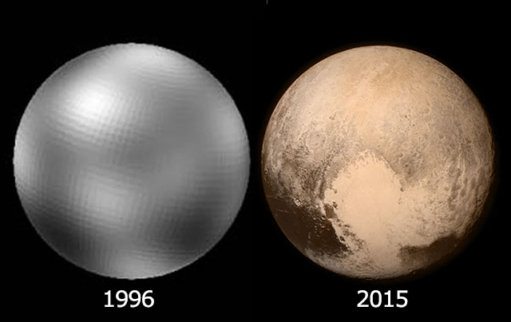
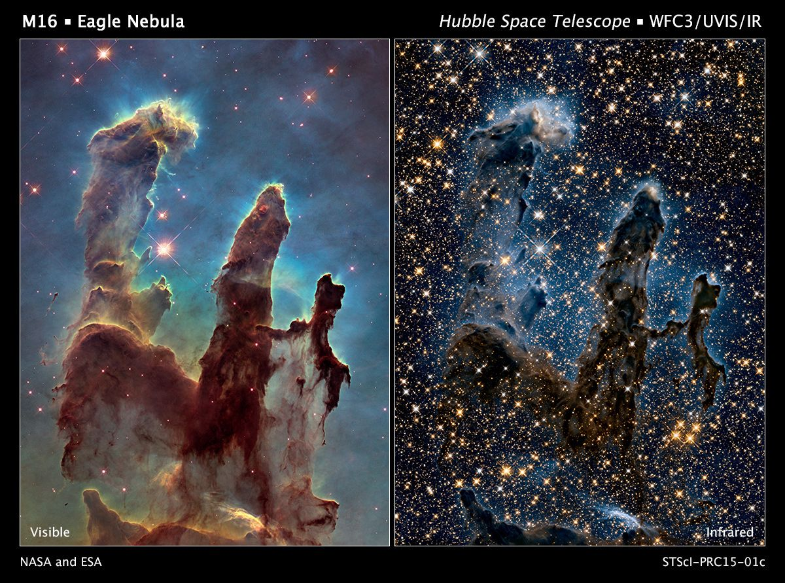

Technology affection on astronomy field

the more technology has been developed the more astronomy informatiom we know like the photo of pluto in 1995 and 2015

so here also the nebula in the past and now days so there is a big differenceso as we see that the technology has a big affection in our life in everything